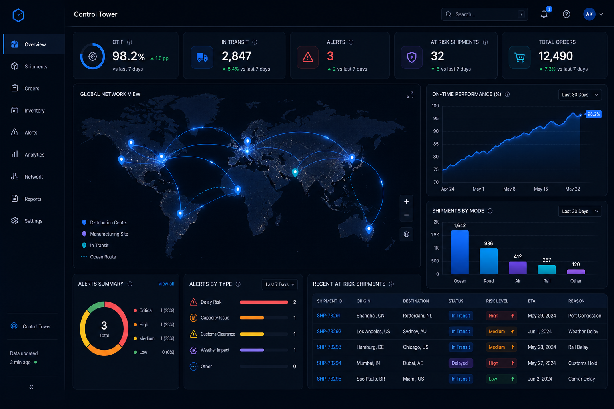

不画大饼，不看口号。下面把两种模式的关键指标摊开来看——差距一目了然。
* 以上为基于平台设计目标的测算，实际效果因企业与品类而异。
预测需求、响应中断、做出更聪明的决策 —— 全部通过一个 7×24 在线的 AI Copilot。

融合历史销量、搜索热度、季节因子、竞品价格等 12+ 维度数据，按 SKU × 区域 × 周粒度滚动输出，告别拍脑袋备货。
台风路径 ∩ 您的在途柜子 → 自动匹配受影响运单 → 推送替代方案 → 一键切换。异常响应从传统 2–5 天缩短到 4 小时以内。
系统不仅报警，更给出 2–3 个推荐方案及量化影响：方案 A 切换备选供应商 +8% 成本；方案 B 空运补货 +15% 成本但缩短 20 天 —— 您只需要选择。
多数同类系统只做流程数字化与被动记录；我们增加了一层情报感知：政策、关税、台风、罢工等会自动关联到您的具体货物并提前预警，而非事后才发现。
采购 / WMS / TMS / 订单 / 关务共用统一主数据，一个 SKU 在所有模块 ID 一致。从 PO 号到 POD 全链路一键追溯，秒级定位问题环节。
不做空泛承诺，而是给出可量化目标：采购准时率提升至 93%、库存周转降至 55 天、异常响应缩短到小时级。先验证、再扩展，可演示、可试用。